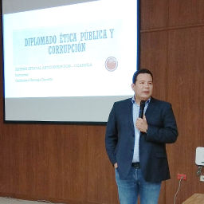

Marco Teórico e Histórico de la Corrupción en México

Guillermo Alejandro Noriega Esparza
Es Licenciado en Relaciones Internacionales por la Facultad de Ciencias Políticas y sociales de la UNAM.
Estudió especialidad en Transparencia, Rendición de Cuentas y Combate a la Corrupción en el Centro de Derechos Humanos de la Facultad de Derecho de la Universidad de Chile. Cuenta también con estudios en la Universidad Rey Juan Carlos de Madrid.
Becario del Institute of International Education y del Departamento de Estado de Estados Unidos en Washington D.C. para estudiar los procesos anticorrupción y de participación ciudadana en ese país.
Investigador en distintas instituciones como Fundar, Centro de Análisis e Investigación AC y ha participado activamente en procesos de reformas legales como la definición del nuevo Artículo Sexto constitucional en materia de acceso información, la Ley General de Transparencia de México, la Ley de Transparencia y los Sistemas Anticorrupción en varias entidades federativas, incluyendo Sonora.
Ha laborado en la Cámara de Diputados, en el Senado de la República, Fundar, Centro de Análisis e Investigación y el Archivo General de la Nación.
Fue Coordinador Nacional de El Colectivo por la Transparencia en México durante la construcción, discusión y negociación de la Ley General de Transparencia.
Fue Fundador y por once años Director de Sonora Ciudadana, Asociación Civil, desde donde coordinó campañas como La Rebelión de los Enfermos, que acabó con la discriminación en el acceso a los servicios de Salud contra las personas con preexistencias en el ISSSTESON de Sonora, ISSSTELEON de Nuevo León y a nivel nacional se dieron avances sustantivos en el Seguro Popular para los enfermos con Esclerosis Múltiple.
Fue Asesor externo de la Comisión Estatal de Derechos Humanos de San Luis Potosí.
Es miembro de los Consejos Directivos de:
- Red México Infórmate AC;
- Iniciativa Sinaloa AC;
- Hermosillo, ¿Cómo vamos? AC,
- Amor y Convicción contra las Adicciones AC, e
- Integrante y de la Comisión de Selección del Sistema Anticorrupción de Sonora
Columnista de El Imparcial y colaborador de distintos medios de comunicación.
Co-autor de publicaciones como: "Resoluciones Relevantes en materia de acceso a la información", Editado por el INAI; "Sobre vivir la discriminación", editado por el Consejo Nacional para Prevenir la Discriminación (CONAPRED); entre otros.
Actualmente es consultor de asuntos públicos en la firma RECSO, Agencia de Cambio Social, en la Ciudad de México.